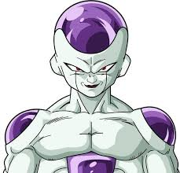
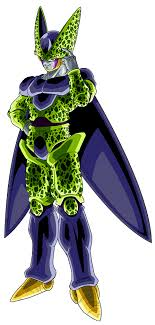

¡Bienvenido al Universo de Dragon Ball!

Aquí encontrarás análisis profundos y curiosidades sobre tus héroes y villanos favoritos de la franquicia de Dragon Ball.
Dragon Ball:
Ésta franquicia comenzó su aventura el 3 de diciembre de 1984 con la publicación del manga en la revista Weekly Shōnen Jump. Fue creado por el maestro Akira Toriyama, quien se inspiró en la novela china Viaje al Oeste para dar vida a Goku y su mundo lleno de artes marciales, esferas mágicas y enemigos memorables.
La adaptación al anime llegó poco después, el 26 de febrero de 1986, transmitida por Fuji TV. Esta primera serie abarca las aventuras de Goku desde niño, su entrenamiento con el Maestro Roshi, los torneos de artes marciales y su enfrentamiento con villanos como el ejército Red Ribbon y Piccolo Daimaku
Dragon Ball Z:
Con el tiempo, la popularidad de Dragon Ball creció exponencialmente, y la serie evolucionó de una aventura cómica a una saga de batallas épicas. Esta transición llevó a la creación de Dragon Ball Z, que se estrenó el día 26 de abril de 1989. La trama inicia con la llegada de Raditz, el hermano de Goku, revelando el origen extraterrestre y saiyajin de nuestro héroe. Esta nueva dirección introdujo un tono más serio, combates a gran escala y la exploración de un universo mucho más amplio, consolidando a Dragon Ball como un fenómeno global.
Dragon Ball GT:
Seguidamente llegamos a Dragon Ball GT, la cual se estrenó en Japón el 7 de febrero de 1996, tan solo una semana después de que finalizara "Dragon Ball Z". Toei Animation buscaba continuar el éxito de la franquicia, pero Akira Toriyama, el creador original, ya había concluido su manga. Aunque Toriyama no escribió la historia de GT, sí tuvo un papel de supervisor, diseñando algunos personajes clave como el robot Giru y el diseño inicial de Super Saiyajin 4, y le dio el nombre a la serie ("Grand Tour" haciendo referencia al viaje espacial de Goku). Sin embargo, la mayor parte de la trama y el guion fueron desarrollados por el personal de Toei Animation.
Dragon Ball Z Kai:
Vamos con Dragon Ball Z Kai, una versión remasterizada y reeditada de la icónica serie Dragon Ball Z. Fue producida por Toei Animation y se estrenó en 2009 en Japón para conmemorar el 20 aniversario de Dragon Ball Z.
Dragon Ball Super:
Estrenado en 2015, es la continuación oficial de la historia de Dragon Ball, que se sitúa después de la derrota de Majin Buu y antes del final de Dragon Ball Z. La serie, supervisada por Akira Toriyama, se ha expandido tanto en formato anime como en manga, y ha introducido nuevos personajes, transformaciones y universos.
Dragon Ball Daima:
Es la más reciente adición a la franquicia de Dragon Ball, y ha generado bastante expectación y conversación entre los fans. Es una serie de anime original que se estrenó en Japón el 11 de octubre de 2024, y se emitió hasta el 28 de febrero de 2025, con un total de 20 episodios.
 Leer Más
Leer Más
Entradas
El Legado de Goku: Más Allá de la Batalla

Exploramos cómo Goku, a pesar de su amor por la lucha, ha influido en la vida de sus amigos y enemigos. Su inocencia, determinación y corazón puro son tan impactantes como sus transformaciones.
Leer más
Análisis: La Saga de Cell y la Evolución de Gohan
Publicado el 10 de julio de 2025 por Bulma_Tech

La Saga de Cell en Z se divide en tres partes: La Saga del Androide Imperfecto, La Saga del Androide Perfecto y La Saga de los Juegos de Cell. Estas sagas narran la aparición y evolución de Cell, un bio-androide creado por el Dr. Gero, y su búsqueda por absorber a los androides 17 y 18 para alcanzar su forma perfecta y organizar los Juegos de Cell.
Saga del Androide Imperfecto: Cell, en su primera forma, busca a los androides 17 y 18 para absorberlos y alcanzar su forma perfecta. La historia se centra en las batallas de Piccolo y Vegeta contra Cell, así como la búsqueda de los androides por parte de Goku y sus amigos.
Saga del Androide Perfecto: Cell, ahora en su segunda forma, ha absorbido al androide 17 y continúa buscando al androide 18. Vegeta confiado en su nuevo poder desafía a Cell, al principio tiene la ventaja pero Cell absorbe a 18 y alcanza su forma perfecta y termina derrotando a Vegeta.
Saga de los Juegos de Cell: Cell, en su forma perfecta, organiza un torneo de artes marciales llamado los Juegos de Cell, donde se enfrenta a los Guerreros Z para probar su poder.
Ésta Saga marcó un antes y un después para Gohan. Su camino de un niño tímido a un guerrero imparable que supera a su propio padre es una de las narrativas más potentes de la serie.
Leer más
Los Villanos Más Icónicos de Dragon Ball Z



Desde Freezer hasta Majin Buu, los villanos de Dragon Ball Z no solo son poderosos, sino que también poseen personalidades únicas que los hacen inolvidables.
Leer más